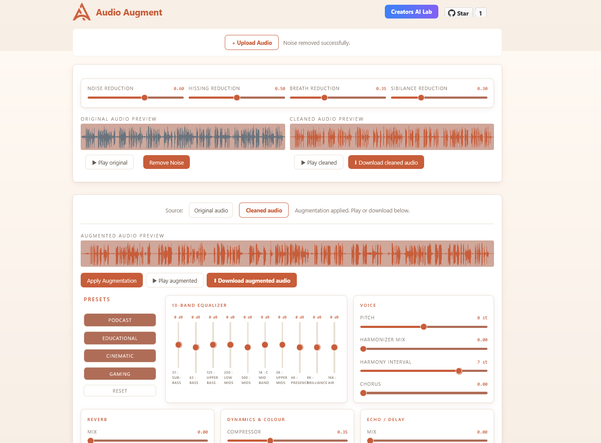

01
Noise & Background Removal
Drop your audio and remove background noise in seconds. Works on recordings, podcasts, voice-overs and calls.
- Background noise reduction
- Hiss & hum removal
- Breath reduction
- Sibilance / de-ess control
Strip noise, hiss and breaths from any MP3 or WAV — then shape your voice with a full effects rack. Runs 100% offline. No account, no upload, no waiting.
Clean first, augment second. Each stage is independent — skip either, chain both.
Drop your audio and remove background noise in seconds. Works on recordings, podcasts, voice-overs and calls.
Shape your clean audio with a full studio effects rack. Apply presets or dial every knob manually.
One-click starting points for the most common use cases. Fine-tune from there.
Download your cleaned or augmented audio as MP3 at any stage. Client-side encoding via lamejs — no server ever sees your file.
Everything you need — nothing you don't. Waveform preview, knob controls, one-click clean audio.

No native audio libraries. No cloud APIs. Pure Web Audio API — same engine in browser and desktop.
audio-augment-x.x.x-x64.nsis.7z
Node.js 20+ required
Yes! It is opensource and we welcome for contributions.The audio engine lives in